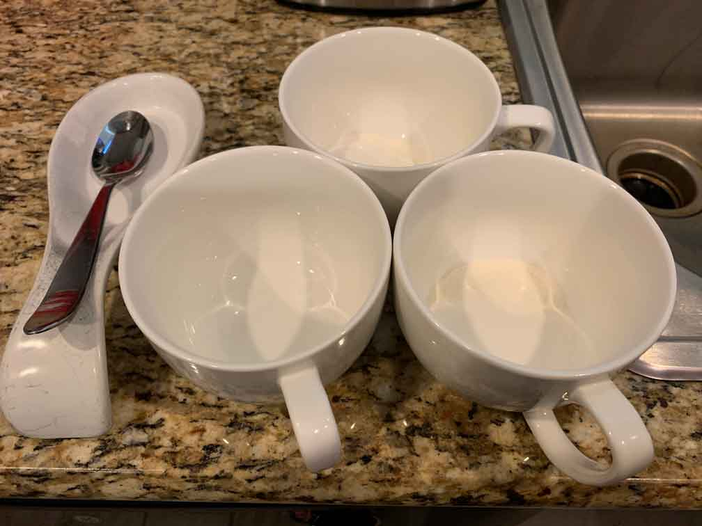

Without Accessibility
The following examples are shown without accessibility features included.
The following examples are shown without accessibility features included.
This is text on a background whose color combination has a low contrast ratio, making it difficult for low-vision visitors to read the text.
This is a video with a voiceover but no captions available, making it difficult for hard of hearing visitors to understand the voiceover.
This is a picture without proper alt text.
